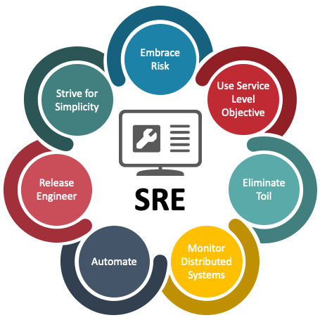

🌐 Why Site Reliability Engineers (SREs) Love Errors and Fixing Them
Hey everyone! 👋 Today, I want to dive into what Site Reliability Engineers (SREs) do and why they love errors. If you’ve ever heard of an SRE, you might know they're a blend of software engineers and IT operations professionals. But there’s more to the story — and, spoiler alert, it involves a whole lot of troubleshooting and, yes, loving errors. Let’s explore! 🚀
💡 What Do SREs Do?
SREs focus on keeping applications and infrastructure running smoothly. Here are some of their core responsibilities:
-
🛠️ Automation: Automate repetitive tasks to save time, improve efficiency, and reduce human error.
-
📈 Monitoring: Continuously monitor systems to ensure everything works as expected. They use tools that send alerts when something seems off.
-
⚙️ Reliability Engineering: Design systems that are resilient to failures, meaning even if an error happens, it doesn’t break everything.
-
🔄 Incident Management: Respond to incidents quickly, identifying the root cause and implementing fixes to prevent the issue from recurring.
By mixing software development with system administration, SREs ensure websites, applications, and services meet high standards of reliability and performance.
🚀 Why Do SREs Love Errors?
You might be wondering why anyone would enjoy errors and problems. Well, here are a few reasons why SREs actually do:
-
🧩 Solving Complex Puzzles: For an SRE, an error is like a puzzle. Finding the root cause of a system crash or latency issue is challenging and exciting. Each fix is a win and brings immense satisfaction. 🎉
-
🔍 Learning Opportunity: Every error teaches something new about the system. Understanding why things broke helps SREs improve their knowledge and hone their troubleshooting skills. It’s a constant learning process.
-
🚀 Building Stronger Systems: Errors allow SREs to make systems more resilient. Once they fix a bug, they often look for ways to prevent it from happening again. This process of continuous improvement is highly fulfilling.
-
🤖 Embracing Automation: Errors help SREs identify where automation could help avoid the issue next time. Automating repetitive tasks makes their lives easier and prevents future errors.
-
📊 Data-Driven Decisions: Errors provide crucial data. When SREs analyze failures, they learn a lot about what works, what doesn’t, and what needs to change. This data fuels smarter decisions.
🛠️ Key Tools and Techniques
An SRE's toolkit is packed with awesome tools for error handling and system monitoring. Some popular ones include:
-
Prometheus for real-time system monitoring 📊
-
Grafana for data visualization 📈
-
Ansible or Terraform for automating infrastructure as code ⚙️
-
Incident Response Playbooks for structured responses to specific issues 📝

🛠️ Tips for Aspiring SREs
Thinking about a career in SRE? Here are a few tips to get started:
-
Learn Linux Fundamentals 🐧 – Almost every SRE role requires strong Linux skills.
-
Master Monitoring and Logging Tools 🔍 – Start with Prometheus and Grafana for a great foundation.
-
Practice Coding and Scripting 💻 – Knowing languages like Python or Bash will make automation much easier.
-
Explore Cloud Platforms ☁️ – AWS, GCP, and Azure skills are highly valued in this field.
If you’ve got questions about SRE life or want to know more about the tools, connect with me on LinkedIn or reach out on my socials below! 👇
🔗 Connect with me:
-
💼 LinkedIn: https://www.linkedin.com/in/rifaterdemsahin/
-
🐦 Twitter: https://x.com/rifaterdemsahin
-
🎥 YouTube: https://www.youtube.com/@RifatErdemSahin
-
💻 GitHub: https://github.com/rifaterdemsahin
By understanding what SREs do and why they love what they do, you can see why this career is crucial for keeping our digital world reliable and fast. Thanks for reading! 🎉
Reference > https://www.linkedin.com/pulse/sre-principles-ravi-naarla/
Imported from rifaterdemsahin.com · 2024